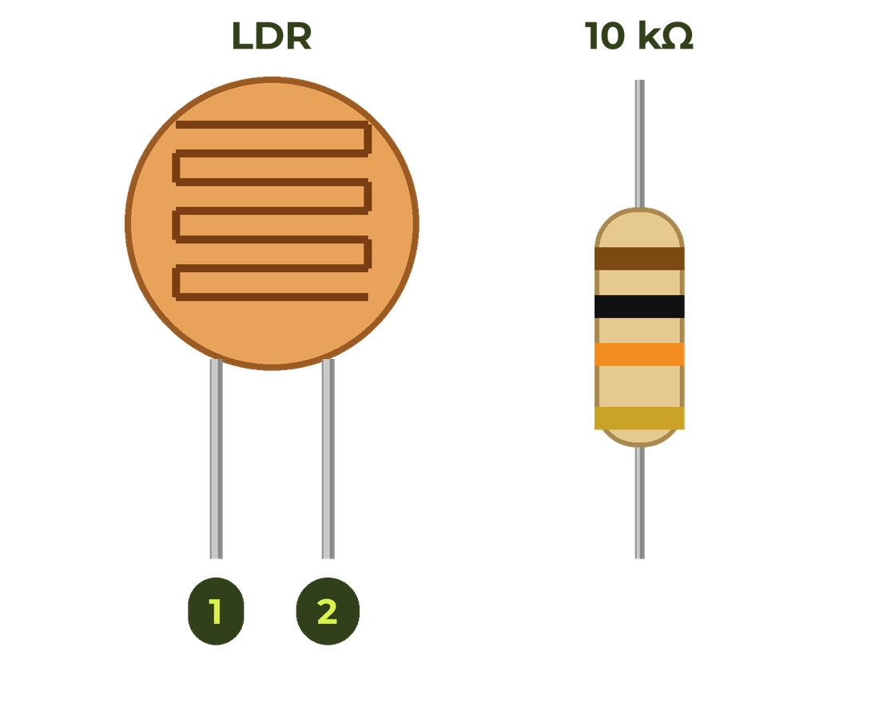
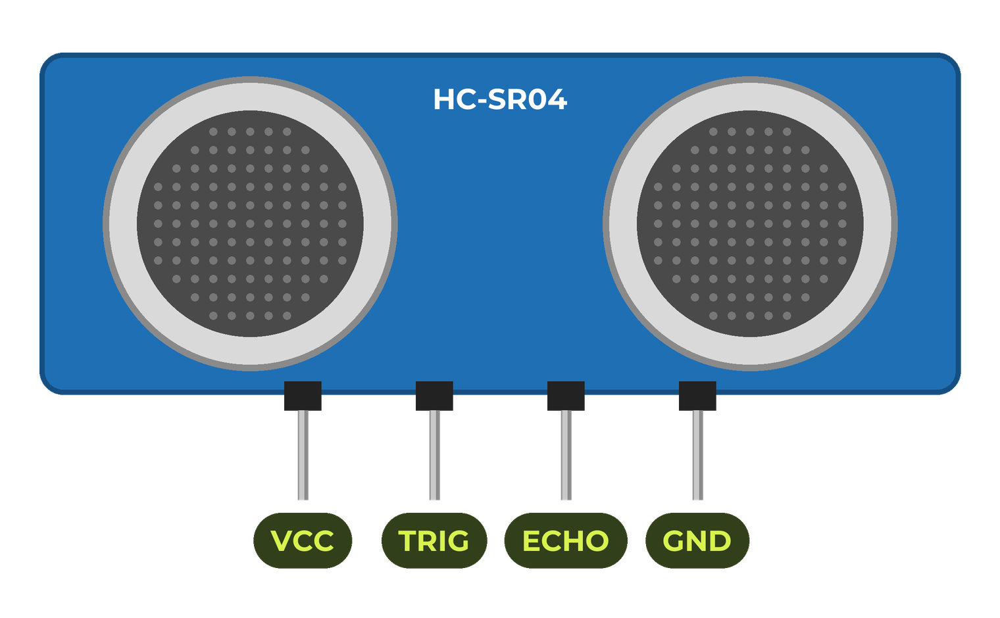
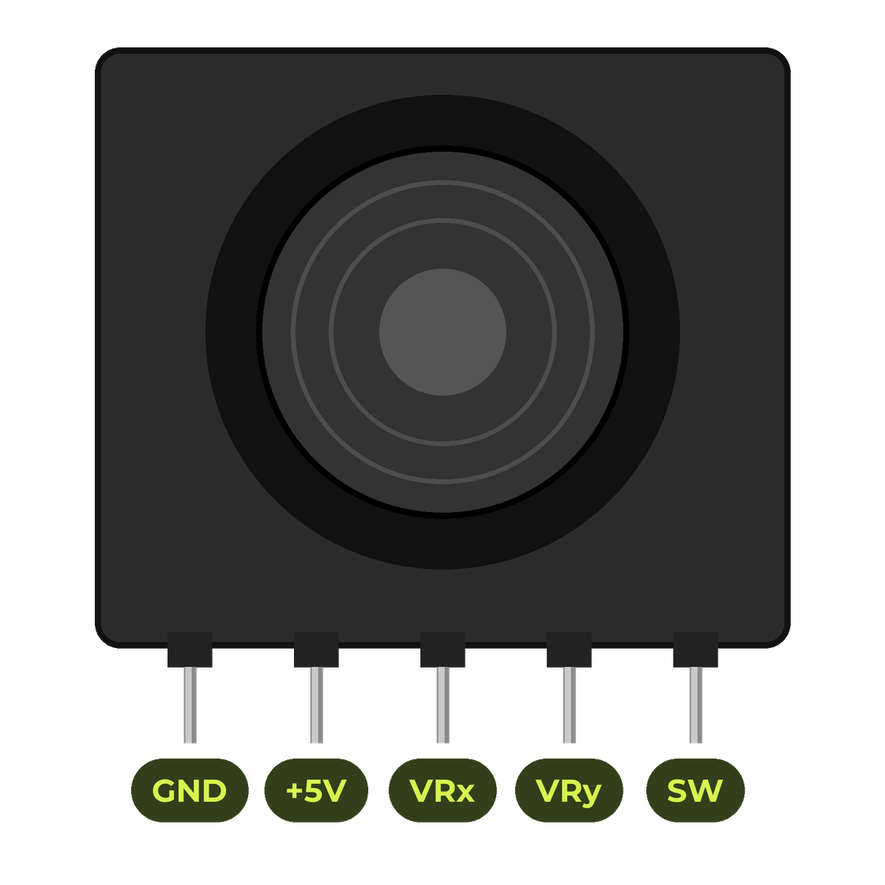
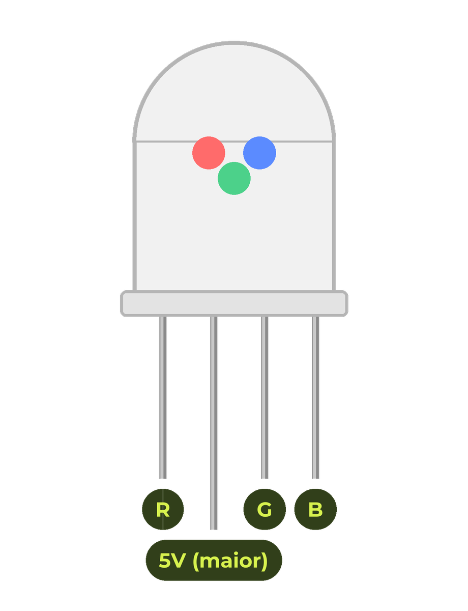
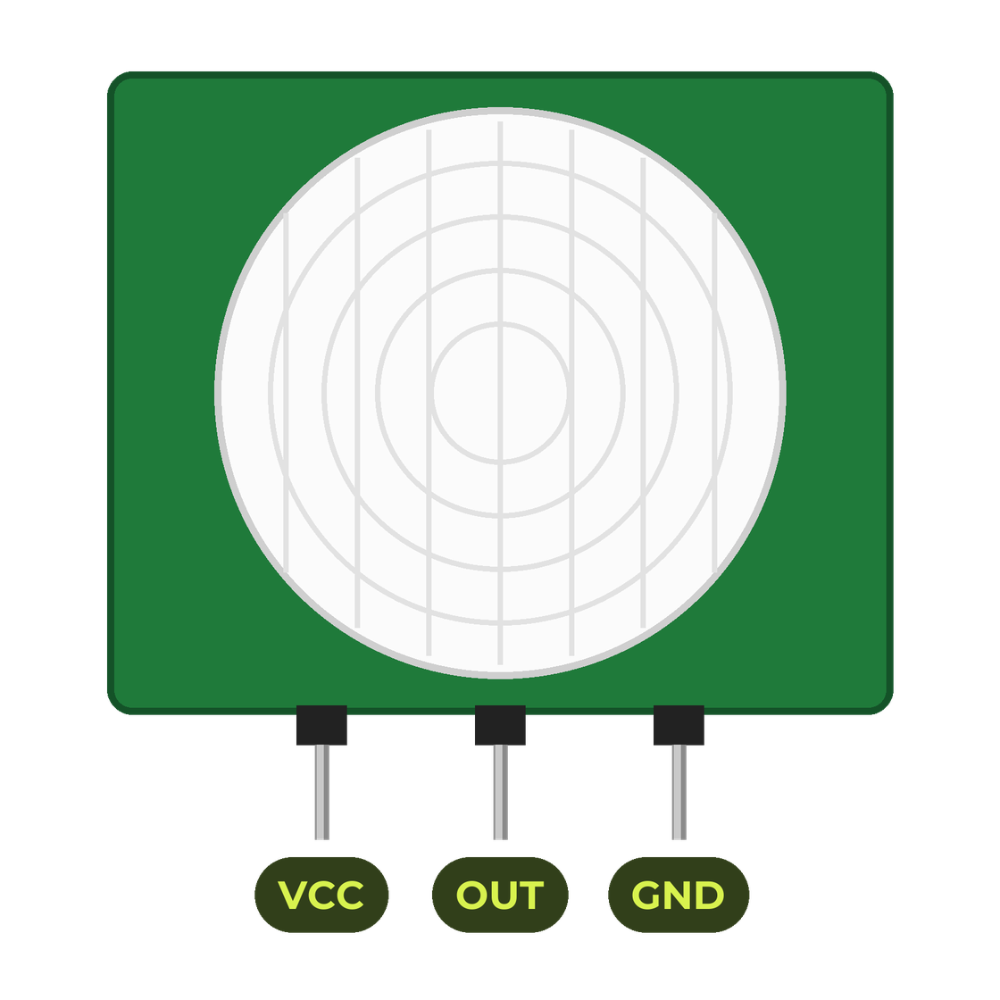

Antes de montar: desligue o cabo USB. Cada código usa um componente; troque as peças e envie o código dele.
Sensor de luz (LDR)
A Ardunina enxerga o escuro
Peças: LDR, resistor de 10 kΩ, LEDs (D4 e D7), buzzer (D9) e servo (D11)
Quando a sala fica escura, os olhos acendem, ela apita e vira o pescoço.

Ligações
- Perna 1 do LDR → 5V
- Perna 2 do LDR → pino A0
- Resistor de 10 kΩ → entre o pino A0 e o GND
#include <Servo.h>
const int sensorLuz = A0;
const int olhoEsquerdo = 4;
const int olhoDireito = 7;
const int boca = 9;
const int pinoPescoco = 11;
Servo pescoco;
void setup() {
pinMode(olhoEsquerdo, OUTPUT);
pinMode(olhoDireito, OUTPUT);
pinMode(boca, OUTPUT);
pescoco.attach(pinoPescoco);
}
void loop() {
int luz = analogRead(sensorLuz);
if (luz < 300) {
digitalWrite(olhoEsquerdo, HIGH);
digitalWrite(olhoDireito, HIGH);
tone(boca, 523, 100);
pescoco.write(110);
} else {
digitalWrite(olhoEsquerdo, LOW);
digitalWrite(olhoDireito, LOW);
pescoco.write(70);
}
delay(500);
}
analogRead() lê um número de 0 (escuro) a 1023 (muito claro). Abaixo de 300, o if acende os olhos, apita e vira o pescoço. Senão (else), apaga os olhos e o pescoço volta.
Experimente: Mude 300 para outro número. Com quanto de luz os olhos acendem?
Sensor ultrassônico
A Ardunina sente quem chega perto
Peças: sensor ultrassônico HC-SR04, LEDs (D4 e D7), buzzer (D9) e servo (D11)
Quando alguma coisa chega a menos de 15 cm, os olhos acendem, ela apita e vira o pescoço.

Ligações
- VCC → 5V
- TRIG → pino 8
- ECHO → pino 12
- GND → GND
#include <Servo.h>
const int trig = 8;
const int echo = 12;
const int olhoEsquerdo = 4;
const int olhoDireito = 7;
const int boca = 9;
const int pinoPescoco = 11;
Servo pescoco;
void setup() {
pinMode(trig, OUTPUT);
pinMode(echo, INPUT);
pinMode(olhoEsquerdo, OUTPUT);
pinMode(olhoDireito, OUTPUT);
pinMode(boca, OUTPUT);
pescoco.attach(pinoPescoco);
}
void loop() {
digitalWrite(trig, HIGH);
delayMicroseconds(10);
digitalWrite(trig, LOW);
long tempo = pulseIn(echo, HIGH);
int distancia = tempo * 0.034 / 2;
if (distancia < 15) {
digitalWrite(olhoEsquerdo, HIGH);
digitalWrite(olhoDireito, HIGH);
tone(boca, 880, 100);
pescoco.write(130);
} else {
digitalWrite(olhoEsquerdo, LOW);
digitalWrite(olhoDireito, LOW);
pescoco.write(90);
}
delay(200);
}
O TRIG solta um som que a gente não ouve. O som bate no objeto e volta para o ECHO. pulseIn() mede quanto tempo isso levou, e a conta transforma o tempo em centímetros.
Experimente: Troque 15 por 30. Agora ela percebe você mais de longe?
Joystick
Você controla a Ardunina
Peças: joystick, servo (D11), LEDs (D4 e D7) e buzzer (D9)
Para os lados, o pescoço vira. Para cima e para baixo, acende um olho de cada vez. Apertando o botão do joystick, ela canta.

Ligações
- VRx → pino A1
- VRy → pino A0
- SW → pino 2
- +5V → 5V
- GND → GND
#include <Servo.h>
const int eixoX = A1;
const int eixoY = A0;
const int botao = 2;
const int olhoEsquerdo = 4;
const int olhoDireito = 7;
const int boca = 9;
const int pinoPescoco = 11;
Servo pescoco;
void setup() {
pinMode(olhoEsquerdo, OUTPUT);
pinMode(olhoDireito, OUTPUT);
pinMode(boca, OUTPUT);
pinMode(botao, INPUT_PULLUP); // apertado = LOW
pescoco.attach(pinoPescoco);
}
void loop() {
// Pescoço no eixo X
int x = analogRead(eixoX);
pescoco.write(map(x, 0, 1023, 0, 180));
// Olhos no eixo Y (centro fica perto de 512)
int y = analogRead(eixoY);
digitalWrite(olhoEsquerdo, y < 300 ? HIGH : LOW);
digitalWrite(olhoDireito, y > 700 ? HIGH : LOW);
// Buzzer no botão do joystick
if (digitalRead(botao) == LOW) {
tone(boca, 660);
} else {
noTone(boca);
}
delay(15);
}
map() converte o eixo X (0 a 1023) em um ângulo do servo (0° a 180°). y < 300 ? HIGH : LOW é um if curtinho. Com INPUT_PULLUP, o botão fica HIGH solto e LOW apertado; noTone() faz o som parar.
Experimente: Troque 660 por outro número. A voz fica mais grave ou mais aguda?
LED RGB
Os olhos da Ardunina mudam de cor
Peças: LED RGB (ânodo comum), 3 resistores de 220 Ω, buzzer (D9) e servo (D11)
O LED passa por vermelho, verde e azul. A cada cor, ela canta uma nota e vira o pescoço.

Ligações
- Perna maior → 5V (não vai no GND!)
- R → resistor → pino 5
- G → resistor → pino 6
- B → resistor → pino 3
#include <Servo.h>
const int vermelho = 5;
const int verde = 6;
const int azul = 3;
const int boca = 9;
const int pinoPescoco = 11;
Servo pescoco;
void setup() {
pinMode(vermelho, OUTPUT);
pinMode(verde, OUTPUT);
pinMode(azul, OUTPUT);
pinMode(boca, OUTPUT);
pescoco.attach(pinoPescoco);
}
// LED de ânodo comum: a perna maior vai no 5V
// e cada cor acende com LOW. O ! inverte: 1 vira LOW.
void cor(int r, int g, int b) {
digitalWrite(vermelho, !r);
digitalWrite(verde, !g);
digitalWrite(azul, !b);
}
void loop() {
cor(1, 0, 0);
tone(boca, 523, 200);
pescoco.write(60);
delay(1000);
cor(0, 1, 0);
tone(boca, 659, 200);
pescoco.write(90);
delay(1000);
cor(0, 0, 1);
tone(boca, 784, 200);
pescoco.write(120);
delay(1000);
}
A função cor(r, g, b) mistura vermelho, verde e azul: 1 liga a cor e 0 desliga. Como a perna maior vai no 5V, cada cor acende com LOW; o ! inverte o número para você não precisar pensar nisso. Usamos liga e desliga porque o buzzer e o servo atrapalham o analogWrite() em alguns pinos.
Experimente: Tente cor(1, 1, 0) e cor(1, 0, 1). Que cores aparecem?
Sensor de presença (HC-SR501)
A Ardunina percebe quem passa
Peças: sensor de presença HC-SR501, LEDs (D4 e D7), buzzer (D9) e servo (D11)
Quando alguém chega perto, ela apita uma vez. Enquanto a pessoa estiver ali, os olhos ficam acesos e a cabeça balança.

Ligações
- VCC → 5V
- OUT → pino 3
- GND → GND
#include <Servo.h>
const int sensorPresenca = 3;
const int olhoEsquerdo = 4;
const int olhoDireito = 7;
const int boca = 9;
const int pinoPescoco = 11;
Servo pescoco;
bool tinhaAlguem = false;
void olhos(int estado) {
digitalWrite(olhoEsquerdo, estado);
digitalWrite(olhoDireito, estado);
}
// Move o pescoço suavemente de um ângulo até outro
void moverPescoco(int de, int ate) {
int passo = (ate > de) ? 1 : -1;
for (int a = de; a != ate; a += passo) {
pescoco.write(a);
delay(8); // menor = mais rápido
}
pescoco.write(ate);
}
void setup() {
Serial.begin(9600);
pinMode(sensorPresenca, INPUT);
pinMode(olhoEsquerdo, OUTPUT);
pinMode(olhoDireito, OUTPUT);
pinMode(boca, OUTPUT);
pescoco.attach(pinoPescoco);
pescoco.write(90);
Serial.println("Calibrando o sensor... aguarde 30 segundos");
delay(30000);
Serial.println("Pronto!");
}
void loop() {
bool temAlguem = digitalRead(sensorPresenca) == HIGH;
if (temAlguem) {
Serial.println("Sensor: TEM GENTE");
if (!tinhaAlguem) {
tone(boca, 1047, 150); // apita só quando a pessoa chega
}
olhos(HIGH);
// Balança a cabeça enquanto tiver alguém
moverPescoco(90, 130);
moverPescoco(130, 50);
moverPescoco(50, 90);
} else {
Serial.println("Sensor: ninguem");
olhos(LOW);
pescoco.write(90);
delay(200);
}
tinhaAlguem = temAlguem;
}
Duas funções novas: olhos() acende ou apaga os dois olhos de uma vez, e moverPescoco() vira o pescoço grau por grau, para o movimento ficar suave. A variável tinhaAlguem faz ela apitar só quando a pessoa chega. No começo, o código espera 30 segundos para o sensor se ajustar: acompanhe em Ferramentas → Monitor Serial.
Experimente: Mude o delay(8) dentro de moverPescoco(). Com um número menor, a cabeça balança mais rápido. Os dois botõezinhos laranja do sensor ajustam a distância e quanto tempo ele fica em HIGH.